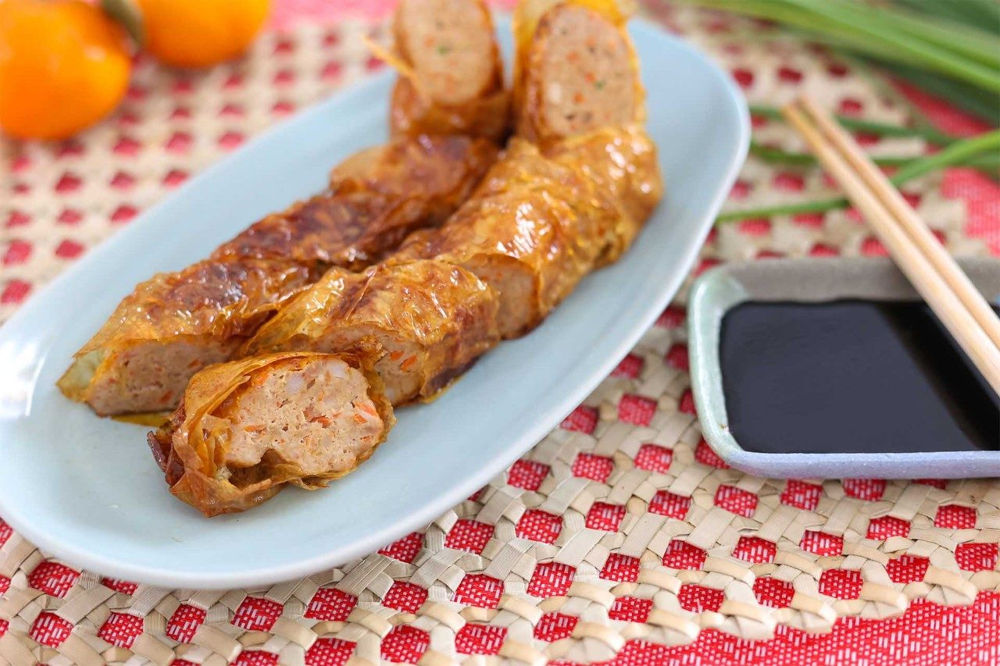

Ngoh Hiang

Traditional Hand-made Ngoh Hiang with Sweet Sauce
Ngoh Hiang or Lor Bak is a five spice pork roll, a favourite
fried food dish in Southeast Asia especially Singapore and
Malaysia. This dish is very famous for its crispy skin and flavourful filling.
It is made with a variety of ingredients such as meat, crunchy
vegetables like carrots and a mixture of sauces.
Ingredients for 10 servings
- 350g Pork Belly
- 300g Pork
- 2 garlic clove(s)
- 3 shallots(s)
- 50g carrot(s)
- 100g water chestnuts
- 30g scallions
- 1 tsp five spice powder
- 0.5 tsp white pepper
- 1.5 tsp sugar
- 1 tbsp light soy sauce
- 0.5egg(s)
- 2 and one-third tbsp corn starch
- 1/8 tsp salt
- 4 tbsp water
- 1 salted beancurd
Steps to make Ngoh Hiang
- Mince garlic, shallots, carrot, scallions and pork belly.
Then, dice the water chestnuts into small cubes.
Cut pork shoulder into thin strips.
Put all prepared ingredients into a bowl.
- Combine soy sauce, 5 spice powder, white pepper, sugar, egg, cornstarch and salt in another bowl. Then, add minced pork and pork strips into the sauce mixture. Mix well. After that, add chopped water chestnuts, scallions, garlic and carrots. Allow to marinate in the refrigerator for at least an hour. Best to leave it overnight.
- Prepare cornstarch slurry by mixing cornstarch and boiling water evenly. Set aside.
- Cut salted beancurd sheets into size of 25 x 20cm. For smaller rolls, cut them into 15 x 15 cm squares. Then, wipe off the excess salt with a wet kitchen towel and set aside. Wrap pork filling immediately. Otherwise, cover the cleaned beancurd sheets with a damp kitchen towel to prevent them from drying.
- Spoon some marinated filling onto a beancurd sheet. Wrap the filling and place it on an oiled plate. Do leave a gap between each roll to prevent them from sticking which may result in tearing.
- Steam the raw Ngoh Hiang for 12 to 15 minutes over low to medium to heat. Serve them immediately if you prefer steamed Ngoh Hiang.
- To fry, allow the steamed Ngoh Hiang to cool for 30 minutes. Heat oil over medium heat. Lightly coat each roll with some cornstarch before deep-frying them for 3 to 4 minutes or until golden brown. Let them cool for 5 minutes before cutting into smaller pieces. Serve warm.